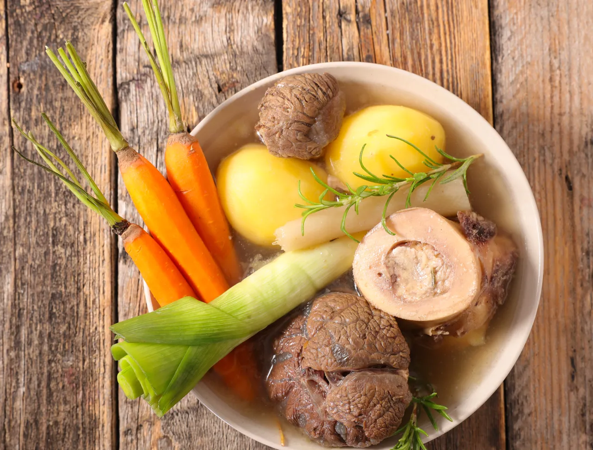

Pot-au-feu

Un bon pot-au feu de ma maman
Pour cette recette "à l'ancienne", vous aurez besoin d'un grand fait-tout, d'un écumoir, et de bons couteaux
Ce plat est fait pour 2 services:le pot-au-feu du midi et la poule au pot le soir!
Plus la viande migeote, meilleur ce sera!!
Ingrédients
- Mettre la viande et l'os à moelle dans un grand faitout, couvrir d'eau froide et mettre sur feu vif. Retirer l'écume avec un écumoir. Cela prend environ 1h.
- Au bout de ce temps, ajouter les carottes, navets, panais, oignon et le bouquet garni. Saler et poivrer
- Laisser cuire à feu doux 1h encore, puis ajouter les poireaux et laisser cuire encore 30mn environ
- Le pot-au-feu est prêt : servir tous les morceaux de boeuf avec les légumes, accompagner de cornichons et de moutarde!